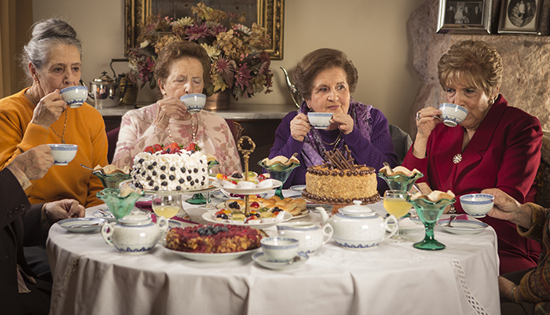
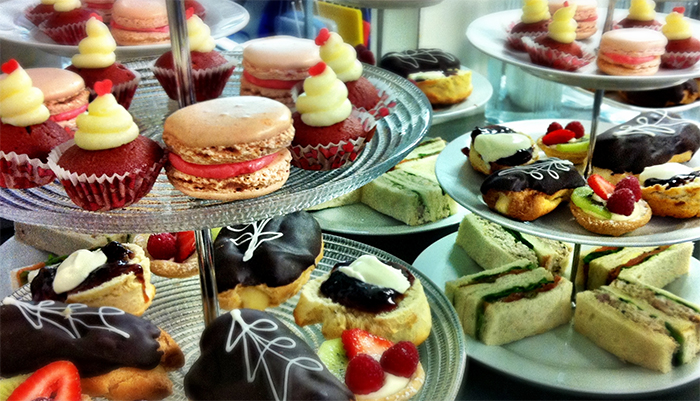
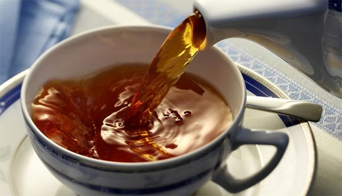
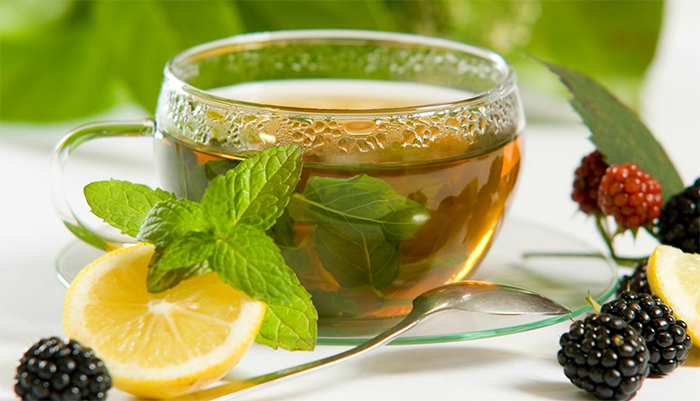
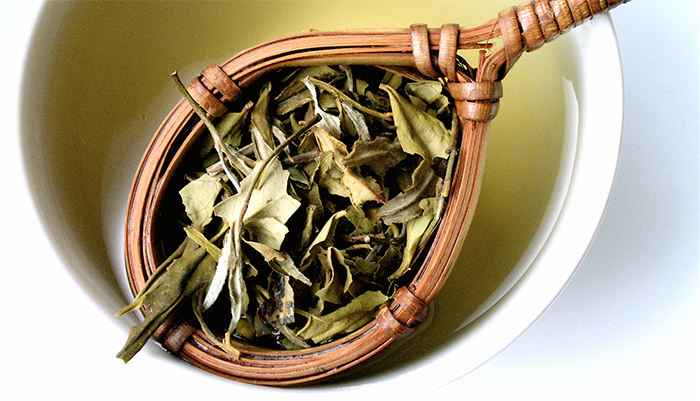
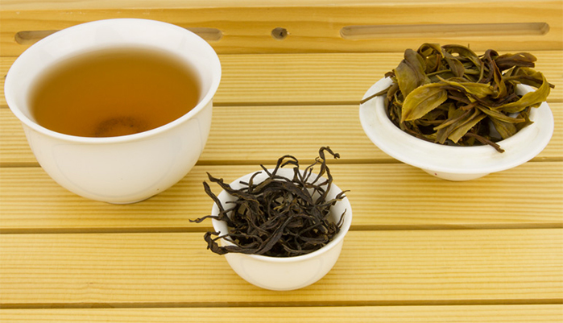
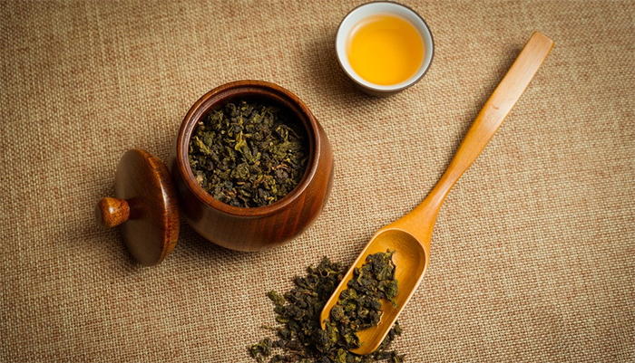
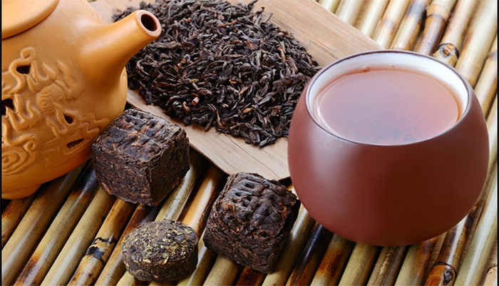

Tea in the United Kingdom
Since the 18th century the United Kingdom has been one of the world's greatest tea consumers, with an average per capita tea supply of 1.9 kg (4.18 lbs) per year. The British Empire was instrumental in spreading tea from China to India; British interests controlled tea production in the subcontinent. Tea, which was an upper-class drink in Europe, became the infusion of every class in Great Britain in the course of the 18th century and has remained so. The role of tea in British culture and history should not be under-estimated.

Best places for high tea
Dating back to the mid-1800s, the tradition of afternoon tea was first introduced by the aristocracy of England and its colonies. Since then, the formal meal has infiltrated the world’s most elite hotels, historic museums, and kitschy patisseries, allowing the masses to enjoy decadent three-tiered servings of finger sandwiches, tiny cakes, and strawberries with Devonshire cream. As an alternative to holiday cocktails, warm-up with afternoon tea at one of our recommended locales, from traditional luxury hotels to homey, rustic cafes.

Black tea
Black tea is a type of tea that is more oxidized than oolong, green and white teas. Black tea is generally stronger in flavor than the less oxidized teas. All four types are made from leaves of the shrub (or small tree) Camellia sinensis.

Green tea
Green tea is made from Camellia sinensis leaves that have not undergone the same withering and oxidation applied when processing Camellia sinensis into oolong tea and black tea. Green tea originated in China, but its production has spread to many countries in Asia.

White tea
Currently there is no general accepted definition of white tea and very little international agreement. One source says that white tea is minimally processed tea (just drying, no fermentation or other procedures). Another says that "white tea is made from buds and young leaves..."

Yellow tea
Yellow tea (Chinese: 黃茶; pinyin: huángchá) is a rare and expensive variety of tea. It is produced similarly to green tea, but with an added step of being steamed under a damp cloth after oxidation, giving the leaves a slightly yellow colouring. This process also imparts a mellower and less grassy taste than is found in green teas.

Oolong
Oolong (simplified Chinese: 乌龙; traditional Chinese: 烏龍; pinyin: wūlóng) is a traditional Chinese tea (Camellia sinensis) produced through a unique process including withering the plant under the strong sun and oxidation before curling and twisting.

Pu-erh tea
Pu-erh or Pu'er is a variety of fermented and aged dark tea produced in Yunnan province, China, and named after Pu'er City. Fermentation in the context of tea production involves microbial fermentation and oxidation of the tea leaves, after they have been dried and rolled.